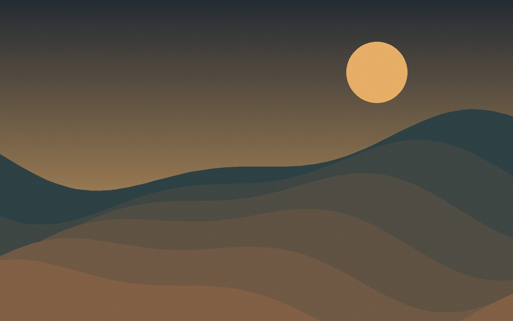
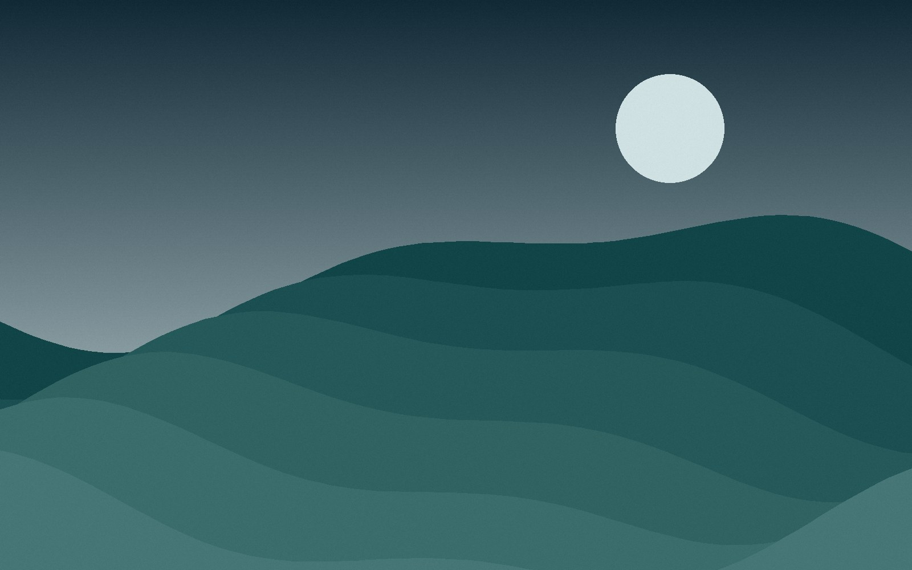
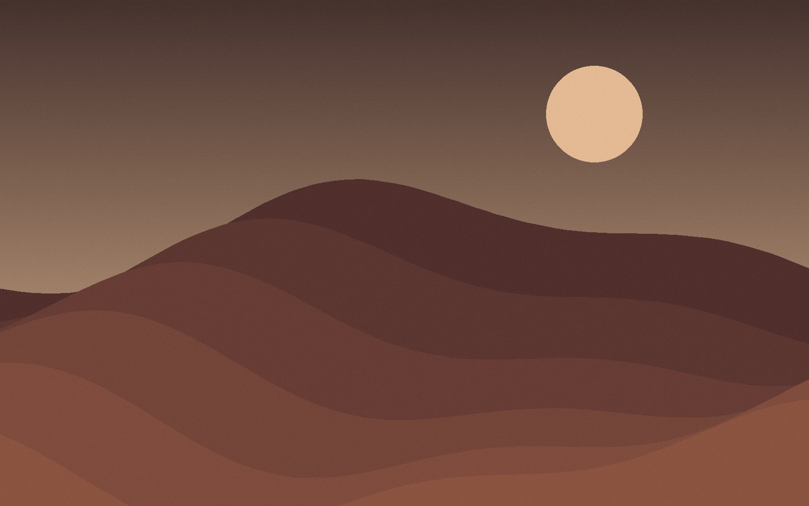
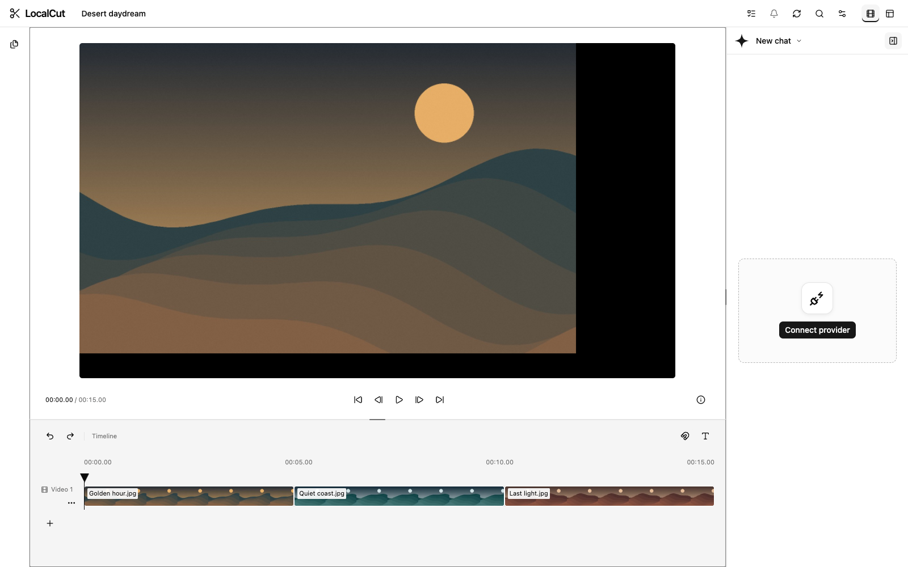

LocalCut / A browser video editor
01 — INTRODUCING
Your
Every great edit starts with you.
01
Find your flow
Your rhythm.

01 / GOLDEN HOUR
02 / QUIET COAST
03 / LAST LIGHTTurn the moments into a story.
A studio in your browser.

IMPORT / EDIT / EXPORT
Shape the story
Cut. Layer. Create.
Golden hour
Your next story
Local media processing
Keep
it local.
Your media. Your workspace.
↘
Make
the cut.
the cut.
LocalCut
Your next story starts here.
wilsonle.github.io/LocalCut